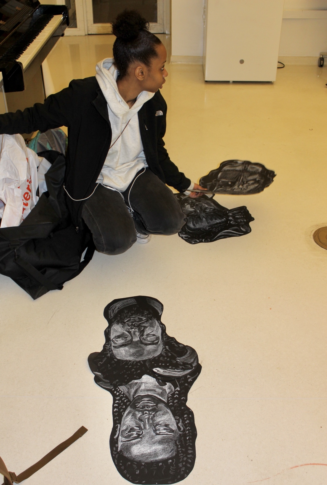
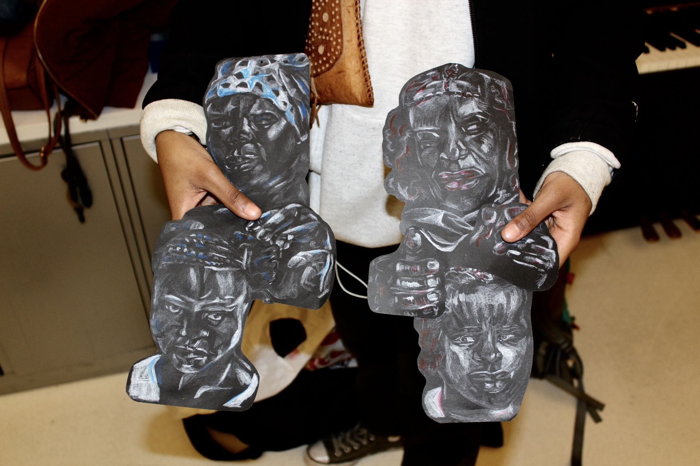
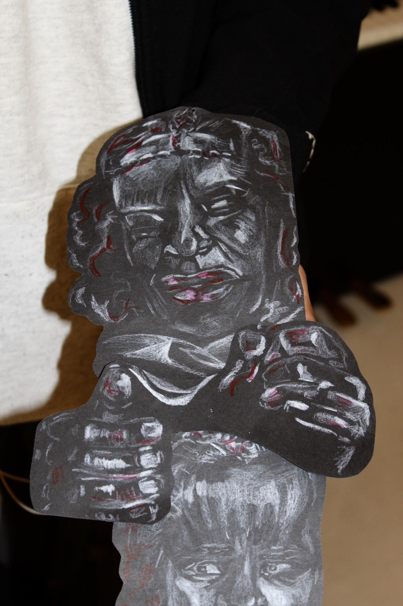

I am currently working on a project about the importance of the historical and current day practice and styling of hair braiding in Black culture. It is for my 2D: Sites Unseen class and my topic is considered unseen due to the fact that hair braiding is continuously appropriated and white washed. The work I’m creating is personal and can be considered political. Being a Black woman and having my hair styled and being the styler since forever, hair braiding is deeply embedded in my life.
There are a handful of negative impacts but a major one is mainly time. As an artist, and I’m sure other artists can attest to this too, creating a piece consists of layers of mental and physical labor. An idea can arise in a matter of seconds, but it’s the research, patience, and growth of inspiration that truly effects the “final” result. With only a couple weeks to execute multiple works of art for different classes it can feel very forced and meaningless.
I don’t think my project is finished. I am in the process of experimenting more with materiality. This was a semester long project of continuously researching my topic and theme and expanding my figures.
I will be working on this project after finals because I have chosen a topic so important to my community and myself and I have started something that I would like to finish. I’ll submit my work in progress for finals and reviews but I have plans created for the time I need to put in after the semester is over. I see this piece expanding in size and in its archive. This is an educational piece as well, and to educate I need to be educated and more research should always be implemented.
I haven’t yet discovered a way to maintain a consistent creative outlook. It is something I had to come to terms with and realize I was lacking and affecting my life in general. I have decided to push through the semester per usual and allow myself the summer to begin my path back to what I am and what I know to do and allow my process of self reflection and research to expand.